Profileプロフィール
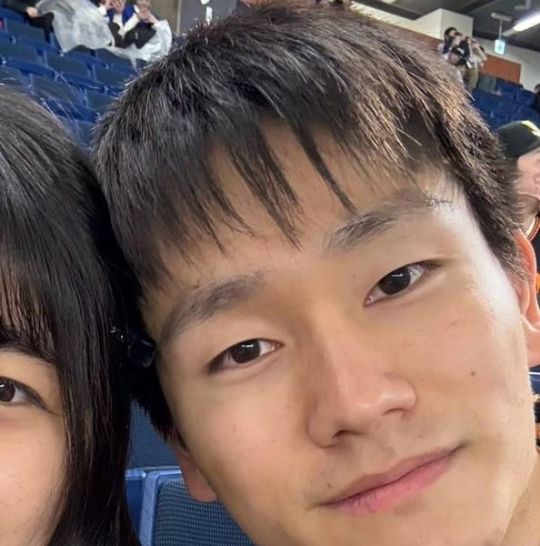
晃輝
こうき
- 誕生日
- 1999年3月7日
- 出身
- 千葉県
- お仕事
- 情報システム
- 趣味
- 会社の草野球チーム
- いま夢中なこと
- ゲームや野球観戦。AIを使っていろいろなものを作ること
- 子どものころ
- おうちにいるのが好きな、大人しい男の子。親の影響でゲームが大好きでした
- 家族
- 陽気で明るい父と、面倒見のいい母
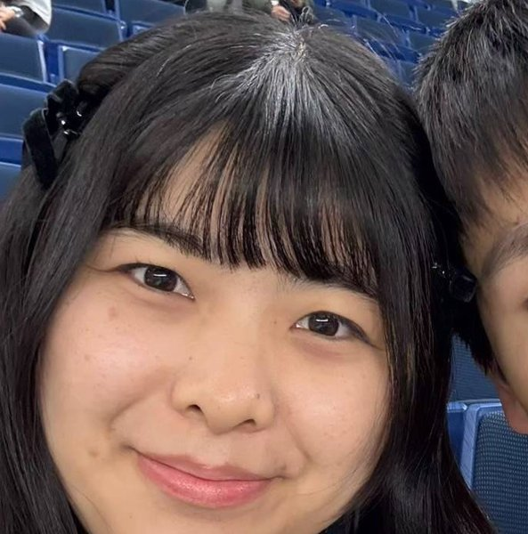
紗生
さき
- 誕生日
- 1998年1月2日
- 出身
- 埼玉県
- お仕事
- 情報システム
- 趣味
- ゲーム、野球観戦、お菓子作り
- いま夢中なこと
- 推し活。バンドやキャラクターのほか、身近な人にも「推し」を作って癒やされています
- 子どものころ
- 外で遊ぶのが大好き。どこでも寝てしまう子でした
- 家族
- 家族思いでDIYが好きな父と、編み物やお菓子作りが好きな母
Q & Aふたりに聞きました
相手の第一印象は？
晃輝「真面目な子」
教育担当として仕事を教える中で、何事にもまじめに取り組む姿が印象に残りました
教育担当として仕事を教える中で、何事にもまじめに取り組む姿が印象に残りました
紗生「推しだ」
研修中、パソコントラブルの対応に来てくれる姿に「頼りになるかっこいい先輩。推せる」
研修中、パソコントラブルの対応に来てくれる姿に「頼りになるかっこいい先輩。推せる」
相手はどんな人？
晃輝何事にもまじめに取り組む頑張り屋さん。
同じゲームが好きで趣味もぴったり合うから、一緒にいるといつも楽しい！
これからもよろしくね
同じゲームが好きで趣味もぴったり合うから、一緒にいるといつも楽しい！
これからもよろしくね
紗生人生すんごく上手に生きている人。
気づくといつもリアルスピードでプロスピしてる。
ちょっと(？)変な人だけど、尊敬できるところがたくさんあって頼りになる！
いつも支えてくれてありがとー
気づくといつもリアルスピードでプロスピしてる。
ちょっと(？)変な人だけど、尊敬できるところがたくさんあって頼りになる！
いつも支えてくれてありがとー
子どものころ・学生時代の思い出は？
晃輝高校・大学時代、友人とよく通ったバッティングセンター。勉強以上に熱中していました
紗生父の影響でゲームと野球観戦が好きに。母とはバレンタインにマカロンや生キャラメル作り。忙しい中、夏休みにキャンプや海へ連れていってくれた両親に感謝しています
最初に交換した連絡先は？
LINEより先に、ゲームのフレンド！同じゲームにはまっているとわかったのがきっかけです。
ふたりの共通の趣味は？
ゲームとジャイアンツの応援！球場でも、おうちでも観戦しています。
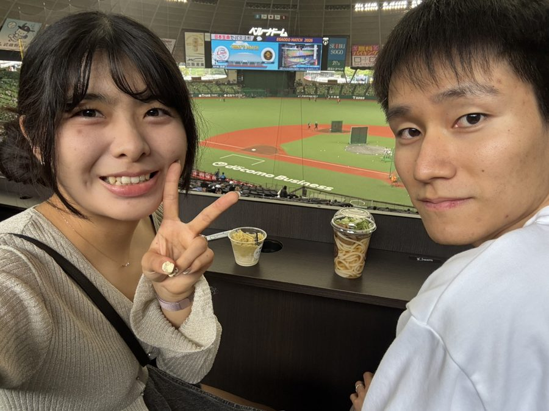
結婚を意識したのはいつ？
お付き合いを始めたときから。ふたりとも、はじめから結婚を見据えていました。
どんな家庭を築きたい？
晃輝効率的に時間を作って、自由な時間も楽しめる家庭
紗生お互いを尊重し合える家庭
Our Historyふたりのあゆみ
-
1998紗生、埼玉県で誕生家族の愛情をいっぱいに受けて育ちます。
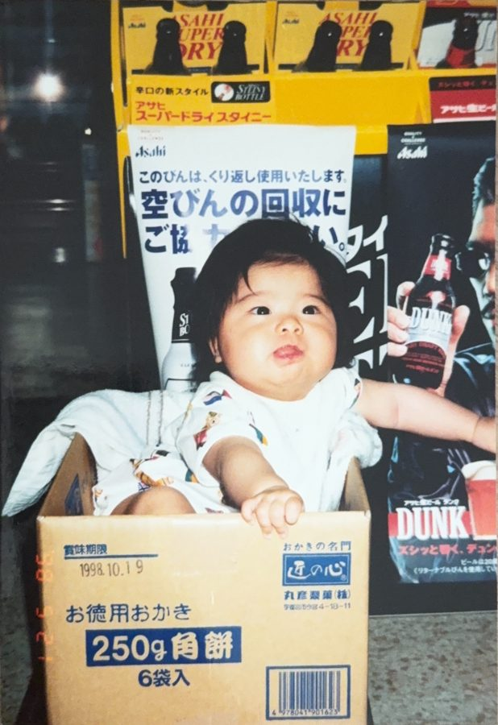
-
1999晃輝、千葉県で誕生よく笑う、ごきげんな赤ちゃんでした。
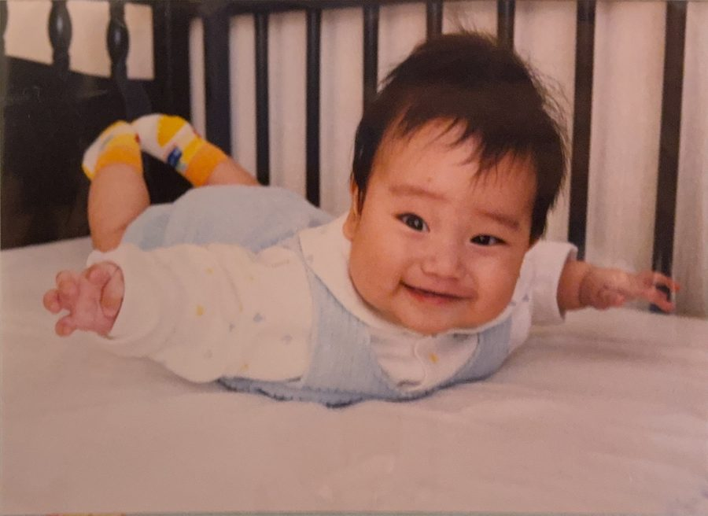
-
2000それぞれの子ども時代晃輝はおうちでゲームに夢中、紗生は外で遊ぶのが大好き。晴れ着の七五三に、プーさんと一緒の一枚。
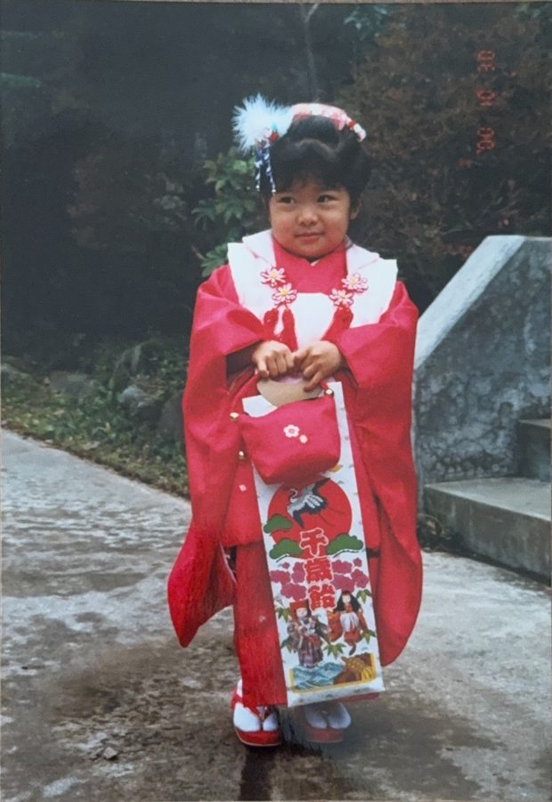
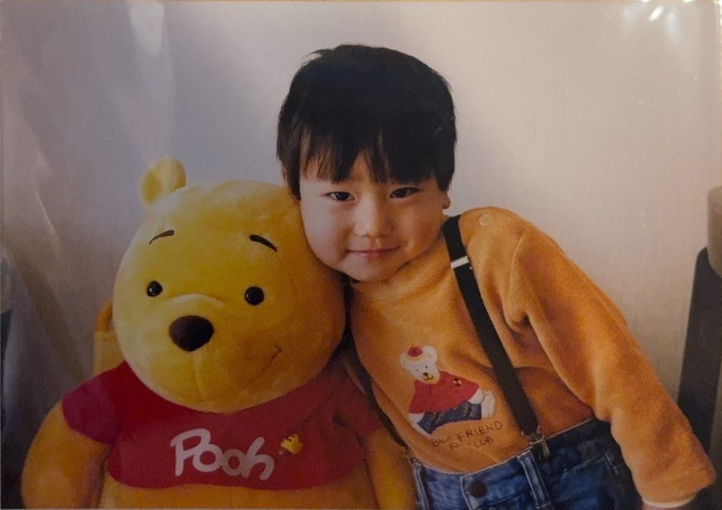
-
2004それぞれ小学生に2004年に紗生、2005年に晃輝が小学校へ。このころ、ふたりはまだ出会っていません。
-
2016それぞれ大学へ2016年に紗生、2017年に晃輝が大学へ進学。晃輝は友人とのバッティングセンター通いに熱中し、紗生はその後、大学院へ。
-
2022.4紗生、入社3か月の研修中、パソコントラブルの対応に来てくれる先輩を見て「頼りになるかっこいい先輩。推せる」。それが晃輝でした。
-
2022.7ふたりの出会い紗生が晃輝のいる情報システム部に配属され、晃輝が教育担当に。同じゲームにはまっているとわかり、LINEよりも先にゲームのフレンドを交換しました。
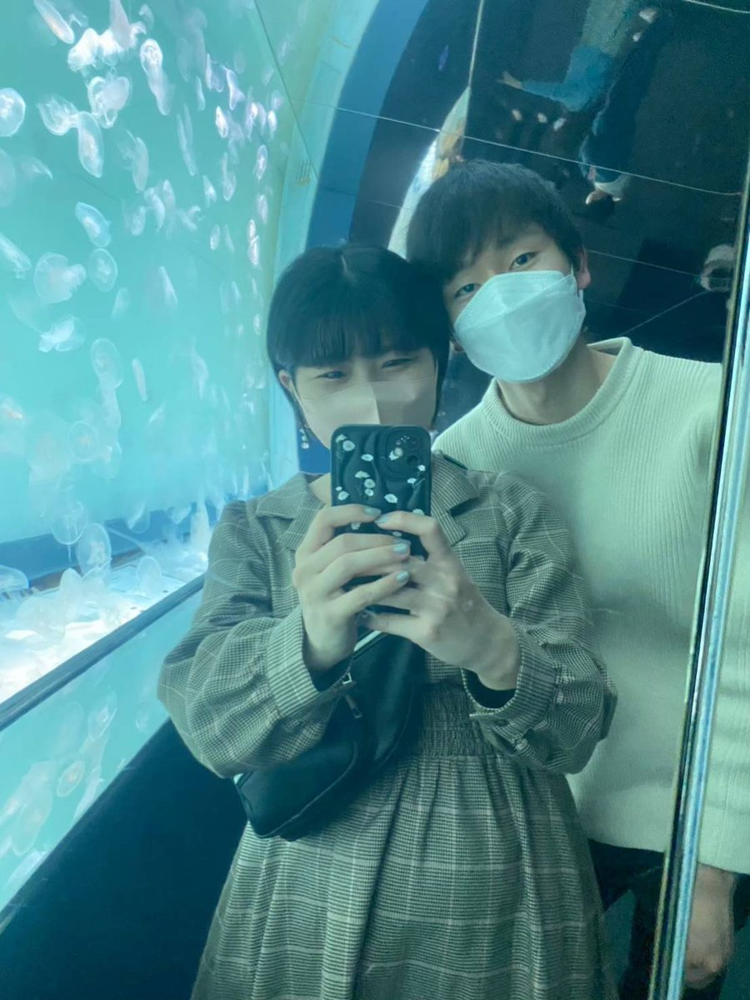
-
2022.10.12交際スタートゲームの中だけでなくリアルでも仲良くなり、お付き合いを開始。今日はちょうど4年目の記念日です。
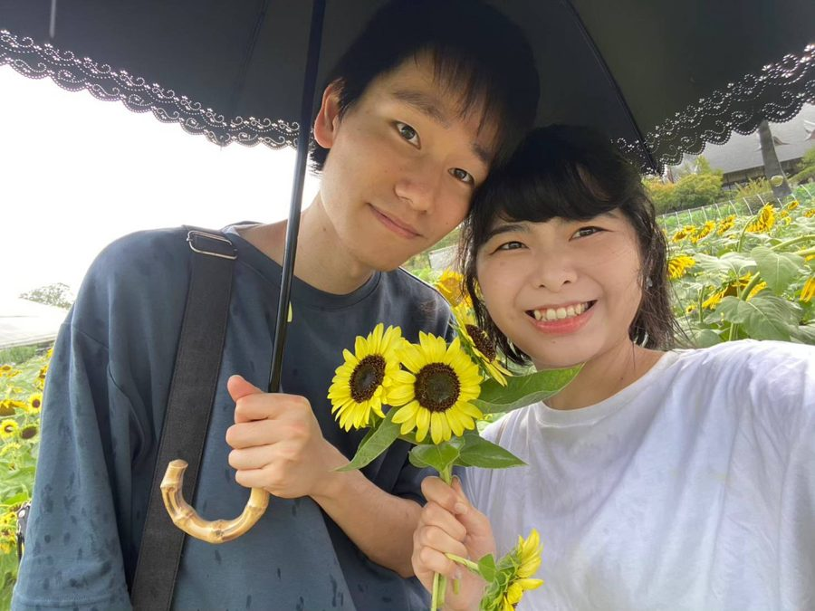
-
2024.10.12入籍はじめから結婚を見据えていたふたり。交際2年の記念日に婚姻届を提出して、夫婦になりました。
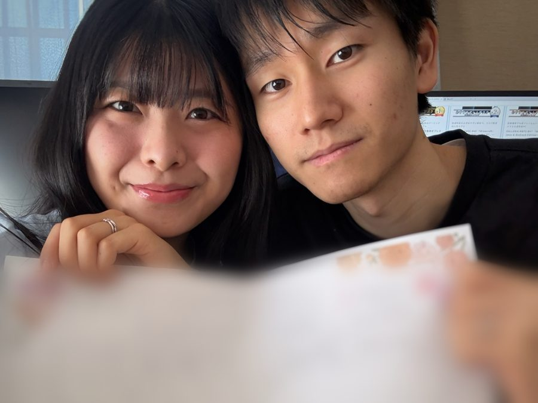
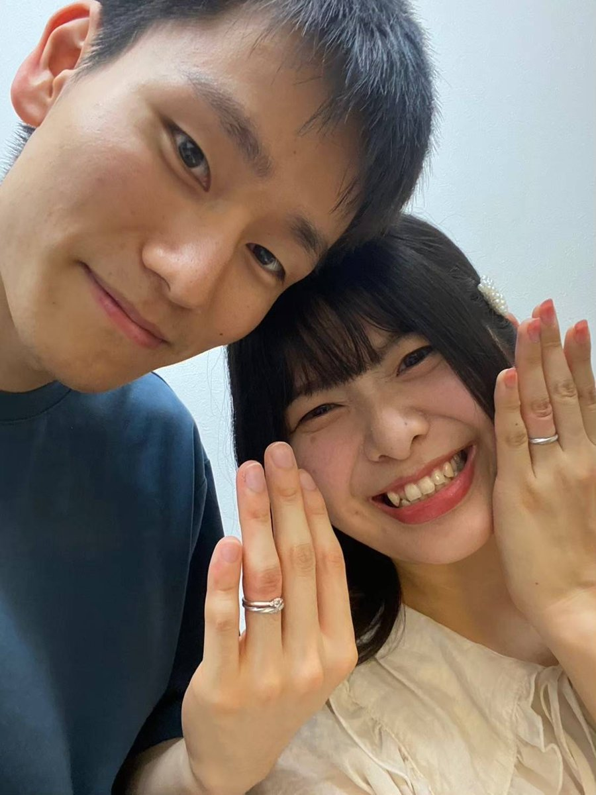
-
2025ふたりの新居地鎮祭を経て、ふたりの家が完成しました。
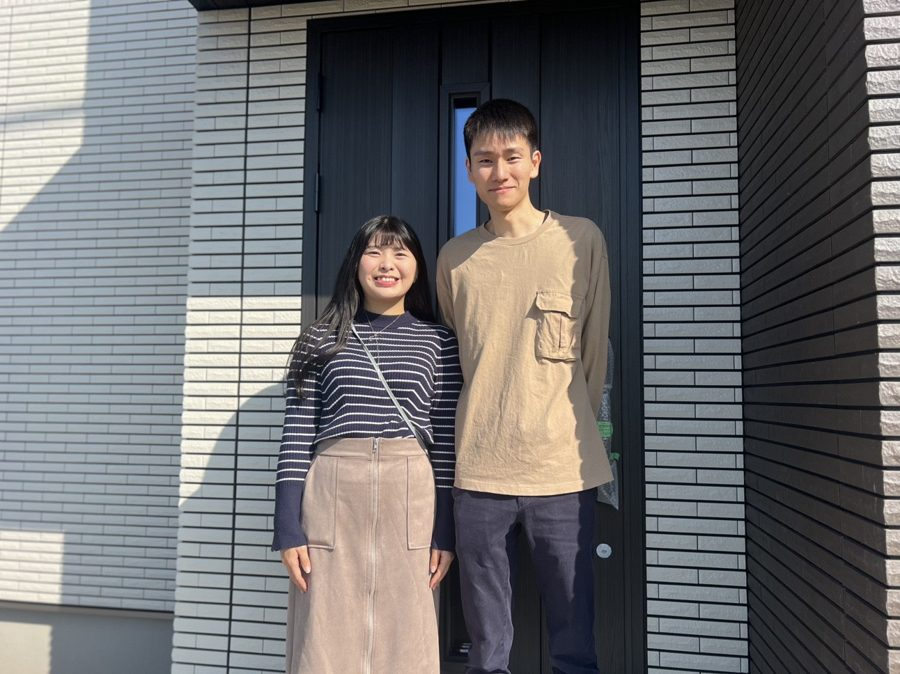
-
2026.10.12結婚式交際4年の記念日に、みなさまの前で結婚式を挙げます。お越しいただき、ありがとうございます。
Today本日のご案内
- 9:15受付開始
- 10:00挙式（人前式）
- 10:20リボン＆バブルシャワー・集合写真
ガーデン - 10:45ウェディングパーティ 開宴
- 11:10乾杯
- 11:15キッチンオープン・お写真タイム
- 11:55お色直し・プロフィール映像
- 12:20新郎新婦 再入場
- 12:35デザートビュッフェ
ガーデン - 13:05花束・記念品贈呈・謝辞
- 13:30お見送り
- 14:00送迎バス出発
※ 時間は目安です。当日の進行により前後することがあります。
Messageゲストのみなさまへ